En mai 1981, le PIB de la France était représenté à 38 % par l’industrie, seule source de biens manufacturés et donc exportables. À fin 2018, ce même PIB ne l’est plus qu’à concurrence d’à peine 13 % soit une perte vertigineuse de 25 % en une quarantaine d’années.
Durant ce temps, les différents gouvernements, via l’Éducation dite nationale, ont fabriqué des intellectuels car le travail manuel apparaissait sans doute comme dévalorisant. Là où autrefois l’ouvrier français était recherché pour ses compétences, il pointe désormais en bonne partie au chômage ou dans des emplois peu valorisants car souvent mal qualifié dès sa sortie d’école.
Quant aux artisans, soit ils embauchent fréquemment des Étrangers faute de trouver la main d’œuvre française nécessaire, soit le plus souvent travaillent seuls ou avec un membre de leur famille sous peine d’être écrasés par les charges financières pour peu qu’ils aient l’idée d’embaucher des collaborateurs.
Pourtant, si les gouvernements successifs permettaient à chaque artisan ou à chaque micro PME d’embaucher une seule personne sans leur mettre à terme un marteau fiscal sur la tête, le chômage serait en grande partie résolu. Néanmoins, il s’agit là certainement, d’une équation trop difficile à résoudre pour nos têtes pensantes, lesquelles pour la grande majorité, n’ont qu’une vague idée de ce qu’est une entreprise et encore moins une unité de fabrication comme leur gestion tant humaine que financière.
À tel point, qu’en 2003, un certain ancien premier ministre avait trouvé une idée géniale en prétextant que l’on pouvait créer une entreprise avec un Euro symbolique, ce qui, sur le fond est vrai… Toutefois, il n’est pas trop difficile de deviner la tête d’un banquier qui voit arriver un futur entrepreneur lui demandant sur ces bases un prêt pour s’équiper en matériel !.. À terme, combiens ont revendus leur peu de biens ou se sont retrouvés endettés jusqu’au coup, ruinant au passage leur famille suite à cette brillante idée ?
Quoi qu’il en soit, pour nos élites la résolution de cette équation cornélienne apparaît globalement se résumer à ceci : durée du retour sur investissement et bénéfice ce qui est le raisonnement d’un homme de finance, pas celui d’un homme politique démocratiquement élu et à ce titre chargé de veiller sur le bon équilibre, sinon le bonheur de chacun dont découle la force et la stabilité d’une nation.
Avec un tel raisonnement, curieusement, si l’on croise la courbe du chômage avec celle de la baisse de la production industrielle, on constate immédiatement une étrange similitude mais silence...
Pour autant, il n’y a toujours pas de responsables quant à cette désastreuse politique.
En Allemagne, pays voisin qui est régulièrement cité comme un exemple en matière d’économie, cette même production industrielle représente encore près de 40 % du PIB mais évidemment, le résultat final n’est pas le même qu’en France ce qui ne signifie pas pour autant qu’il soit souhaitable d’adopter les mêmes méthodes.
À l’Est du Rhin une balance économique bénéficiaire, à l’Ouest du fleuve un déficit vertigineux dont pour l’heure rien ne montre qu’il ne va pas poursuivre son chemin dans la même direction avec les conséquences sociales que l’on connaît déjà.
Il doit bien y avoir une raison qui n’est pas nécessairement de la responsabilité des autres !
Si l’on en juge par la situation actuelle, il semble que l’avenir de la France se résume de plus en plus à deux mots : écologie et humanitaire, reste à savoir de quelle écologie il s’agit et si cela sera suffisant pour redresser les comptes de la nation, donnant ainsi aux gens un travail valorisant, productif et rentable pour le pays ce qui semble assez peu probable et même pas du tout.
Après la dernière guerre mondiale, l’important programme énergétique à base de centrales hydrauliques et de centrales thermiques à flamme se poursuivit jusque dans les années 70.
Puis, à partir de 1974 arriva celui des centrales nucléaires, tant désormais décrié mais qui mit largement la France dans une situation enviable car exportatrice d’énergie électrique financièrement compétitive mais également en matière de compétences, mondialement reconnues.
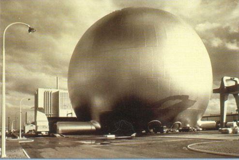
Centrale nucléaire de Chinon en 1963
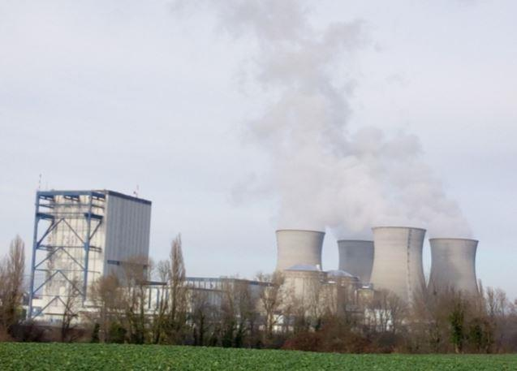
Centrale nucléaire du Bugey. Une tranche de 550 MW à uranium naturel modéré au graphite mais définitivement arrêtée depuis 1994.
4 tranches à uranium naturel enrichi, modéré à l’eau (REP). Les centrales électronucléaires fournissent environ 75 % de l’électricité produite en France.
Photo. JMT 2018
On sait ce qu’il en advint dans les années 95 puis 2010 sous le règne de gouvernements soumis au dicta « écologiste »… Aujourd’hui, nos techniciens sont partis en Chine ou ailleurs et quant à l’EPR, on ignore quand il pourra être mis en service alors que les Chinois en démarrent actuellement deux d’un coup.
Parallèlement au programme électronucléaire, vint le règne éphémère du train à grande vitesse qui réalisa de réelles prouesses techniques mais qui fut un fiasco à l’exportation. Quant à sa rentabilité financière, on ne peut que s’interroger d’autant que le prix d’un billet va bientôt décourager une grande partie des Français ce qui n’empêche pas de continuer à fermer nombre de petites lignes jugées non rentables, ceci au profit du tout voiture, du tout autocar et du tout camion avec taxes et péages évolutifs en proportion.
Que reste-t-il ? Airbus qui n’est qu’à 50 % national, Alstom qui fut en partie revendu à General Electric dont on connaît désormais les difficultés, les poids lourds Renault cédés à Volvo (Suède) et les tracteurs agricoles de la même marque à AGCo (USA).
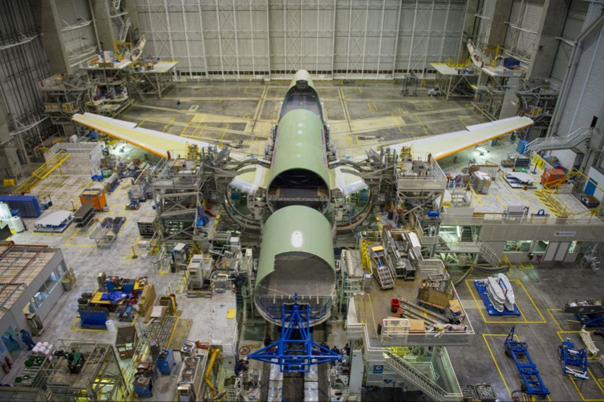Quant à l’industrie sidérurgique, elle est désormais la propriété des Indiens comme l’informatique largement aux Chinois… Liste surtout pas limitative.
Qu’à cela ne tienne… Peut-être dans un ultime souci de survie, la dernière géniale invention, sans doute pour occuper les Français mais plus assurément pour finir de les ruiner, apparaît répondre de la fameuse transition énergétique.
Quotidiennement ressassée sans doute pour bien persuader chacun de son absolu nécessité, d’où les grand’messes mondiales régulières appelées COP. Cependant, jusqu’ici on constate que parmi tout ce grand monde convié et nécessairement spécialiste de la question, l’on n’en voit aucun y participer en vélo, en patinette, voire à pieds ce qui serait pourtant la moindre des choses et montrerait assurément l’exemple.
Ainsi, cette transition énergétique qui doit nous débarrasser petit à petit des centrales nucléaires, fera largement appel aux générateurs électriques éoliens et photovoltaïques, sauf que l’on s’interroge toujours quant à leur réelle production d’énergie, générateurs accessoirement fabriqués à l’étranger.
Un sujet dont l’importance engage tout de même l’avenir du pays si bien que fin 2017, il se résume à ce qui suit :
Suivant RTE (Réseau de Transport d’Électricité)1, la France disposait d’une puissance de 13 559 MW éoliens ce qui est déjà important mais qui, en réalité, ne représente que 4.50 % de la production électrique globale.
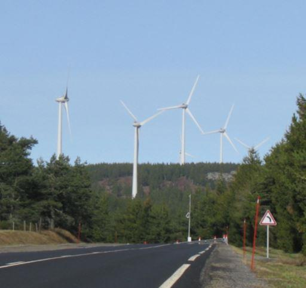
Une partie du parc éolien de Coucouron situé dans le département de l’Ardèche. Puissance totale : 74 MW. Suivant la moyenne nationale constatée, l’équivalent annuel pleine puissance n’est que de 14,80 MW, soit 14 800 kW ce qui donne une production de 129,65 GW/h/an. Ramené à la puissance de la centrale hydroélectrique de Génissiat, ce parc éolien fournirait 736 GW/h/an, soit 2.31 fois moins. Photo. JMT avril 2018</span>
Quant au photovoltaïque, pour 7 660 MW installés, c’est encore plus calamiteux puisque cela n’atteint que 1.70 % de la production nationale.
Autrement dit, si l’on compte bien, ces deux énergies tantôt écolos, tantôt vertes, tantôt renouvelables et autres élogieux qualificatifs, pour 13 559 + 7 660 = 21 219 MW installés, soit déjà environ un tiers de la puissance du parc électronucléaire, au total n’ont représenté que 6.20 % de la production électrique française ce qui est clairement ridicule et même grotesque mais pourquoi cela ?
Tout simplement parce qu’il y a confusion entretenue ou pas entre la puissance installée et la production réelle électrique, seul paramètre qui intéresse le consommateur/contribuable.
Par conséquent, si l’on effectue une simple opération conduisant à calculer l’équivalent pleine puissance, c’est-à-dire le nombre annuel d’heures à pleine puissance, nécessaire pour produire au total ces 6.20 % de la production nationale, on arrive à ce qui suit :
1 770 h par année pour l’éolien et 1201 h, toujours par année pour le photovoltaïque ce qui revient à diviser par environ 5 la puissance installée pour l’éolien et par 7 pour le photovoltaïque.
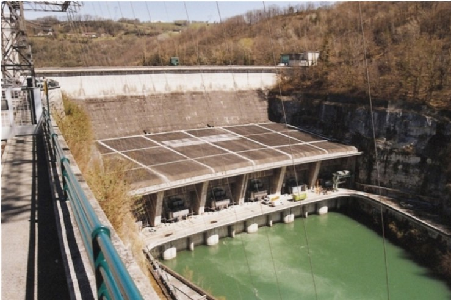
Centrale hydroélectrique de Génissiat sur le haut Rhône. Puissance max. 420 MW. Production moyenne annuelle : 1 700 GW/h. Département de l’Ain (France). Photo. JMT 2015
Inutile de préciser que sans la généreuse ponctions dans le portefeuille du contribuable2 et le renchérissement consécutif du prix du kW/h, ces deux énergies qui n’ont strictement rien d’écologique n’existeraient pas, au moins à l’échelle industrielle car parfaitement marginales et ruineuses3.
On voit donc immédiatement qu’il s’agit ici d’un autre volet de l’anti-économie française, d’autant plus que ces matériels devront à moyen terme faire l’objet de renouvellement et que la grande majorité de leurs composants n’est pas fabriquée en France. Ce n’est donc certainement pas avec cela que l’on va sauver la planète des gaz à effet de serre et autres calamités mais plutôt enrichir certains circuits financiers !
Devant un tel résultat, on pourrait sans doute en déduire sans risque que la production électrique depuis les générateurs éoliens comme photovoltaïques apparaît secondaire puisque de toute manière l’installation est en partie largement payée par le consommateur/contribuable.
Dans un autre chapitre, il est sans doute inutile d’aborder l’affaire des deux bateaux MISTRAL vendus à l’Égypte qui, selon les Russes, aura coûté environ 1.50 milliards à la France sans compter tous les autres contrats perdus.
Pas davantage en ce qui concerne l’immigration massive et la généreuse contribution financière attribuée à cette population importée, appelée correctement « migrants » mais dont il serait bon de définir plus précisément la réelle qualité, tant leur diversité et leurs intérêts sont diffus.
Pourtant, les sources de motivation et d’opportunités ne manquent pas mais l’on ne peut que s’interroger sur ce que les dirigeants de l’État ont fait depuis ces 40 dernières années alors qu’un de leurs rôles était précisément d’insuffler et d’encourager des idées novatrices nationales. L’objectif final étant de conserver à la France une grande place dans le monde dont en particulier auprès de ses anciennes colonies où les portes sont longtemps restées ouvertes…
Pendant que cette France, désormais asservie à l’empire étasunien éparpille et épuise ses forces militaires, voire financières en différents endroits de la planète en coopérant sans réserve au titre de la solidarité avec les sanctions américaines appliquées à nos partenaires économiques, les Asiatiques dont les Chinois en particulier s’implantent petit à petit à notre place en Afrique de l’Ouest. Vaste région que nous n’avons pas été capables de préserver alors que la population était largement acquise à la France. Il suffisait pour cela après les indépendances de poursuivre dans de bonnes relations fructueuses pour les deux parties et non pas de tomber dans la françafrique.
Une forme de Commonwealth aurait certainement été plus intelligente et judicieuse plutôt que de favoriser des régimes sanguinaires et/ou corrompus.
A titre de simple exemple, si les 404, 504 et autres 205 Peugeot qui, à leur époque, étaient les reines de l’Afrique sub-saharienne, sans parler de la 2 CV Citroën qui passe à peu près partout, voire la 4L Renault, aujourd’hui elles s’appellent Toyota, Nissan, Mitsubishi, Kia, Honda, etc.
Quant à nos cyclomoteurs, ils sont devenus à 95 % chinois, ayant petit à petit remplacé les célèbres mobylettes Peugeot, localement appelées P 50 et autres Motobécane, lesquelles malgré leurs qualités ont d’ailleurs depuis longtemps disparu chez nous au profit de ces mêmes marques asiatiques.
En effet, rien ne nous empêchait alors de perfectionner nos véhicules en les adaptant simplement à notre époque et aux besoins locaux plutôt que de mettre de l’électronique partout qui supporte très mal la chaleur comme la poussière et qui nécessite des spécialistes pour l’entretien, lesquels font localement défaut comme les pièces de rechange4.
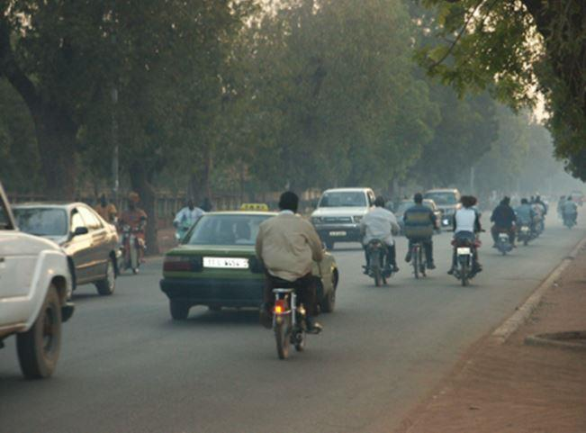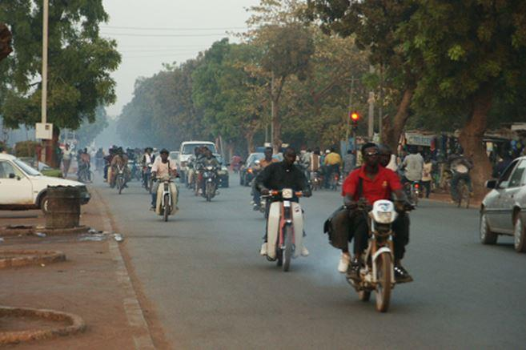
Dans une ville d’Afrique de l’Ouest, on cherche désormais de plus en plus les motocyclettes et les véhicules de marques françaises. Photos. JMT 2005
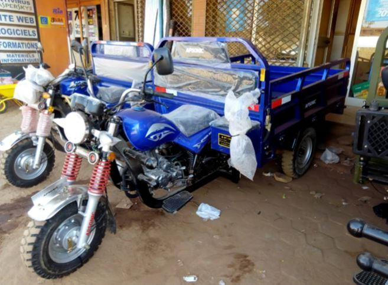
Triporteurs de marque Apsonic, fabriqués en Chine
Parlons aussi des poids lourds, des engins de chantiers et des autocars de la marque Cinotruk qui prennent le même chemin, du matériel médical et naturellement de l’électronique comme de l’informatique mais ce n’est pas tout…
En restant dans le même sujet, les Anciens se souviennent certainement que jusqu’en 1965/70, à Paris comme dans certaines grandes villes circulaient encore de nombreux triporteurs et autres véhicules électriques alimentés par de simples batteries au plomb aisément recyclables, triporteurs qui ravitaillaient les commerçants. Aujourd’hui, ce sont des camionnettes à moteurs diesels auxquelles l’État applique des règles de pollution et donc des taxes sensées sauver la planète d’un désastre annoncé.
Cependant, encore mieux c’est toujours possible, puisqu’après avoir encouragé le véhicule à moteur diesel, désormais il est à bannir alors que tout individu un peu averti sait très bien que de nos jours ce type de moteur est certainement celui qui pollue le moins, y compris devant le véhicule électrique5.
D’ailleurs à ce propos, il convient évidemment de s’interroger quant à l’alimentation effective de ces véhicules puisqu’au titre de cette fameuse transition énergétique, dans les années qui viennent il est prévu d’arrêter de nombreuses tranches nucléaires.
Va-t-on recharger leurs batteries à partir des éoliennes et des panneaux solaires ?
Inutile de chercher une certaine cohérence dans tout cela sinon qu’en premier lieu un souci de rentrées financières mais qui épuisent inévitablement les peuples concernés, conduisant ainsi tout droit à la récession économique et aux mouvements sociaux.
Quoi qu’il en soit, cela justifie de nouvelles taxes ce qui rend en ce domaine la France championne toutes catégories, vraisemblablement en conservant un bel avenir en ce domaine alors que le pays n’est crédité que de 0.9 % de la pollution atmosphérique mondiale dont on sait très bien qu’une partie vient d’Allemagne.
Faut-il avoir fait de savantes études pour tenter de gérer un tel système qui ressemble étrangement à un serpent qui essaie de se mordre la queue ?
Revenant vers cette même Afrique de l’Ouest, très pragmatiques, les Chinois ont étudié le marché et proposent depuis plusieurs années deux modèles d’engins similaires construits depuis une fourche avant de motocyclette avec son moteur, le tout équipé d’une benne basculante ce qui constitue un triporteur très rustique, mais à moteur à essence et naturellement à coût financier limité.
Parfaitement adaptés au besoin, leur succès fut immédiat et ces triporteurs désormais pullulent à peu près partout, parcourant même journellement de grandes distances.
Ici encore, la France a brillé par son absence, incapable de donner des successeurs à ses divers produits pourtant à l’époque très appréciés, tout simplement en les adaptant aux conditions locales et sans compliquer inutilement les choses ce qui ne nous aurait pas déshonoré. Pour autant, soyons certains, comme d’habitude, nous avons forcément de bonnes raisons pour cela…
Au lieu de semer un peu partout la guerre avec nos «amis» américains et d’essayer de sauver «nos intérêts» par les armes ce qui, pour finir fait sans doute le bonheur des sociétés d’armement et des grands monopoles internationaux, la Chine s’en est abstenue.
Grâce à cette sage politique, elle a désormais en sous-main largement conquis le marché de détail et de matériels lourds en Afrique de l’Ouest et même au-delà. Un comportement qui paraît autrement plus productif, y compris pour l’image de marque, plutôt que d’y semer le malheur.
Cela apparaît aujourd’hui largement confirmé par le projet russo-chinois de nouvelle route de la soie pour lequel la Chine a déjà commencé à très largement investir en infrastructures sur le continent africain dont au niveau de la sous-région de l’Ouest.
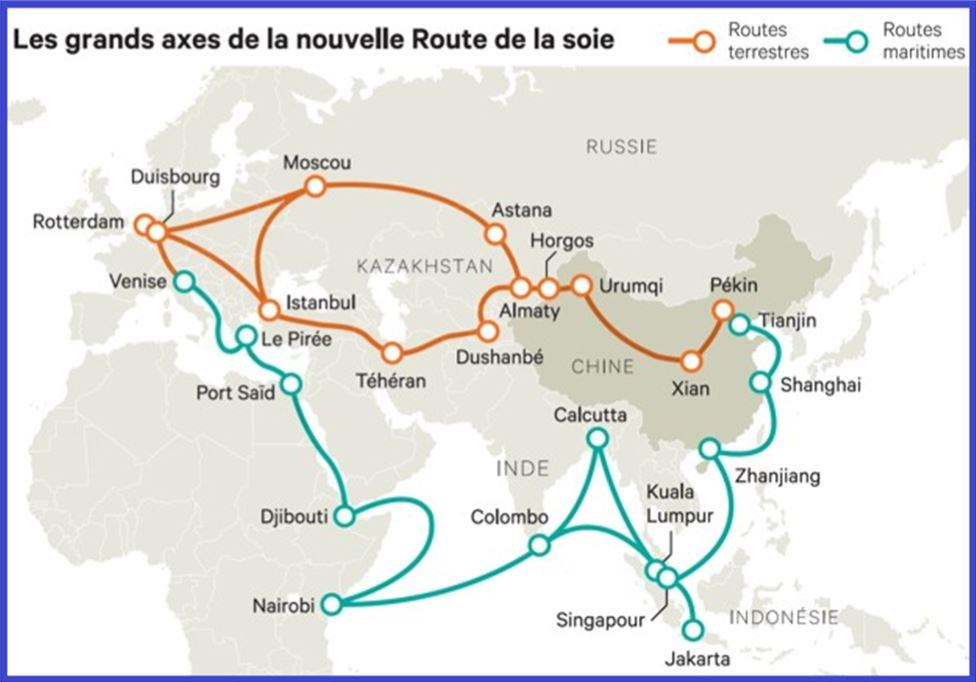Il est évident que pour les populations maintenues depuis si longtemps dans une misère galopante, ce changement qui s’amorce ne passe pas inaperçu d’autant que les populations, lasses de tous ces conflits largement entretenus par l’Occident commencent à comprendre où est leur intérêt et en tirent les conclusions qui s’imposent.
De là, il ne sera pas trop difficile de déloger la France, dans un premier temps au moins d’un point de vue économique ce qui d’ailleurs commence à être le cas.
À nouveau : ECHEC ET MAT.
Perdant petit à petit l’Afrique dont vraisemblablement à terme la main mise sur le Franc CFA6, l’Hexagone ne pourra que continuer et inévitablement à s’appauvrir un peu plus avec les conséquences que l’on devine.
Grâce à ses richesses minérales, qui possède l’Afrique possède aussi une large partie du monde. Suivant cela, il serait sans doute prématuré d’estimer que la chose se passera sans conflit, d’autant que la France est désormais militairement bien installée en Côte d’Ivoire (Abidjan), au Burkina Faso (Ouagadougou), au Niger (Bamako) mais aussi historiquement à Djibouti ce qui revient à cerne le Sahel.
Parallèlement, nos « amis » américains le sont aux mêmes endroits et commencent à construire une énorme base dans le Nord du Niger mais c’est évidemment un hasard… Il en est de même du développement du terrorisme dans toute la bande sahélienne ce qui promet de fructueux marchés d’armements mais peut-être également d’essayer de conserver la main mise sur les richesses minérales locales (uranium, or, fer, pierres précieuses, phosphates, etc.)7. Cependant, il s’agit ici d’un débat complémentaire au présent article.
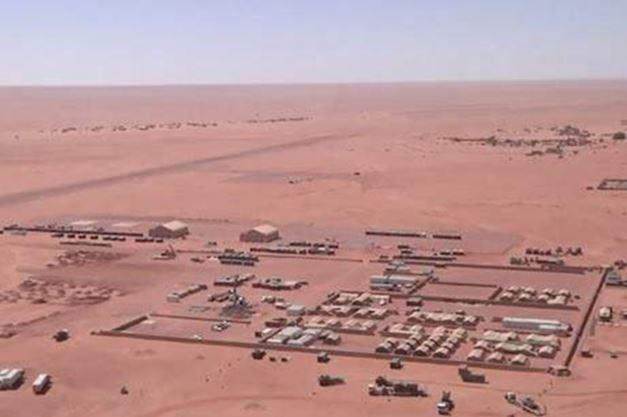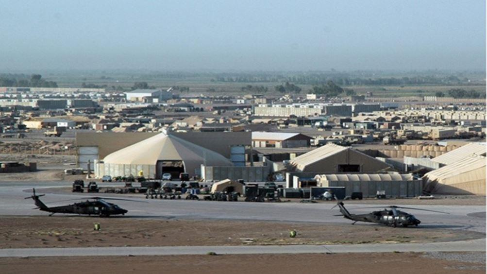Quoi qu’il en soit, en d’autres termes si maintenant on considère l’évolution de la géostratégie, petit à petit l’Europe de l’Ouest et le Maghreb sont ainsi pris en sandwich entre d’une part la fédération de Russie sur son flanc l’Est et la Chine sur son flanc Sud sans oublier que le Maghreb montre de plus en plus un œil bienveillant pour la Russie, ce que l’on peut aisément comprendre.
Toutefois, de brillants politiciens avec force médias ne manqueront sans doute pas d’expliquer au commun des mortels que c’est encore la faute du ²vilain Vladimir² ou autre « dictateur » tel Xi Jinping en Chine qui ne comprennent rien à la démocratie telle qu’elle doit être vécue, c’est-à-dire suivant le modèle occidental.
Durant ce temps, la France s’épuise à grands pas et gère plutôt mal que bien un flot migratoire quelle est de plus en plus incapable d’assimiler, flot migratoire dont pour mémoire elle porte une bonne part de responsabilité via ses brillantes interventions militaires en Irak, en Syrie, en Lybie comme en Afrique, toujours avec nos ²amis² mais là encore : silence radio.
À ce sujet, nos médias ont déjà oublié ces détails sachant qu’il est plus facile de nous faire pleurer sur les malheurs endurés par ces pauvres gens pudiquement appelés « migrants » mais que serait aujourd’hui la Syrie que nous continuons à bombarder, sans l’intervention du « vilain » Vladimir ? Ce n’est pas trop difficile à deviner !
Pourtant, l’Homme n’est jamais aussi bien que là où il a poussé ce qui signifie deux choses :
- Que la France aurait eu tout à gagner en conservant une forte indépendance industrielle ce qui aurait entraîné une bien meilleure balance économique, de même pour la solidité sociale plutôt que de se lier dans cette mondialisation étasunienne à géométrie variable, un jeu similaire à celui de qui perd gagne.
À ce propos, rappelons aussi les paroles d’un certain Maréchal de France dont il ne faut manifestement plus parler et même peut-être prononcer le nom :
« C’est une pitoyable histoire que celle des lois dites de cette époque. Elles n’ont pas relevé la condition ouvrière, elles n’ont pas abaissé la féodalité capitaliste, elles ont plus qu’à demi ruiné l’économie nationale ».
« Il est vain de penser que les ouvriers puissent être heureux au sein d’une entreprise en détresse, la prospérité des entreprises conditionne le bien-être de leurs membres »"8.
N’est-ce pas toujours d’actualité ?
- Dans la mesure où après leur indépendance, si la France avait soutenu d’une manière intelligente et constructive le développement de ses anciennes colonies, d’une part elle aurait conservé d’importants débouchés économiques, d’autre part elle ne subirait pas aujourd’hui ce flot migratoire qui est en train petit à petit de l’étouffer, tant d’un point de vue économique que social ce qui ne sera pas, ici encore, sans graves conséquences.
Une fois de plus, on constate que les effets de décisions prises à un instant ²t², voient leurs résultats se prolonger, souvent d’une manière imprévisible. C’est donc pourquoi la compétence et le désintéressement personnel des membres le constituant, sont deux incontournables éléments pour qu’un gouvernement, quel qu’il soit, ait le souci exclusif du bien-être de la population qui l’a élu et pas d’autre chose.
Ces quelques considérations montrent que l’Europe dont la France en particulier sont bien mal parties, désormais asservies qu’elles sont à nos « amis » américains, eux-mêmes de plus en plus englués dans leurs propres contradictions et une économie fort incertaine dont la guerre ici et là constitue une importante part du revenu national au sein d’un empire en grandes difficultés.
Il serait sans doute temps de se rappeler l’histoire de la cigale et de la fourmi, toujours d’actualité, faute de gros ennuis à la clef.
J-M. T.
Notes :
1 RTE était une filiale à 100% d’EDF mais son capital fut ouvert à concurrence de 49.9 % à la Caisse des dépôts et des Consignations et à CNP Assurances le 31 mars 2017.RTE reste néanmoins sous contrôle d’EDF à 50.10 % € donc indirectement de l’État français.
2 La fameuse CSPE (Contribution au Service Publique de l’Électricité), soit environ 7.50 % de la facture d’électricité destinée aux énergies dites renouvelables à laquelle s’ajoute l’augmentation du prix du kW/h vendu. Depuis 2004 jusqu’à fin 2017, cette CSPE a représenté environ 23 milliards d’Euros uniquement pour l’éolien et le photovoltaïque, soit une moyenne annuelle en 15 années de 1.55 milliards d’Euros…
3 On observe que le programme électronucléaire français, soit 63 000 MW installés à ce jour, n’a jamais fait appel à ce type de subvention payée par le consommateur.
4 En 2017, le constructeur Peugeot a redémarré en Tunisie une chaine de production de la 404 pick up modernisée. 1200 véhicules ont été vendus d’avance. Dans ces conditions, pourquoi avoir arrêter la production ?
5 Le Dacia DUSTER à essence et GPL se voit appliquer une taxe pollution de 3 400 € alors que le DUSTER HDI n’est pas ou peu affecté ce qui n’empêche pas l’État d’inciter les Français à abandonner le diesel. Comprenne qui pourra !.. Comment être crédible ?
6 1 Euro = 656 Frances CFA. Cette monnaie est garantie par le Trésor français mais le pays perdant de plus en plus de terrain en divers domaines, cette garantie s’épuise d’autant, ce qui ne manquera pas de remettre en cause ce Franc CFA. Un projet est d’ailleurs en cours pour tenter de constituer une monnaie régionale pouvant s’étendre à d’autres pays d’Afrique. Toutefois, ce n’est pas gagné d’avance car il est peu probable que l’empire étasunien y soit favorable, sauf naturellement à y trouver intérêt.
7 Tous secteurs confondus, l’Afrique de l’Ouest assure environ 25 % du niveau de vie de la France ce qui est énorme et explique bien des choses. On peut aisément en déduire qu’un Commonwealth ou similaire serait plus judicieux que d’y semer la guerre mais pour l’heure ce n’est plus possible compte tenu de notre asservissement à l’empire étasunien.
8 Discours à la nation du Maréchal Philippe Pétain prononcé le 15 septembre 1940.Si effectivement des mesures sociales devaient être prises, toutefois suite aux événements de mai/juin 1936, dès septembre suivant le Franc dévaluera de 30 % ruinant ainsi de nombreuses avancées.
Partager cette page